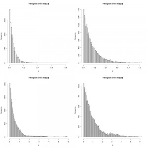
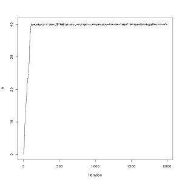
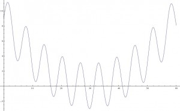
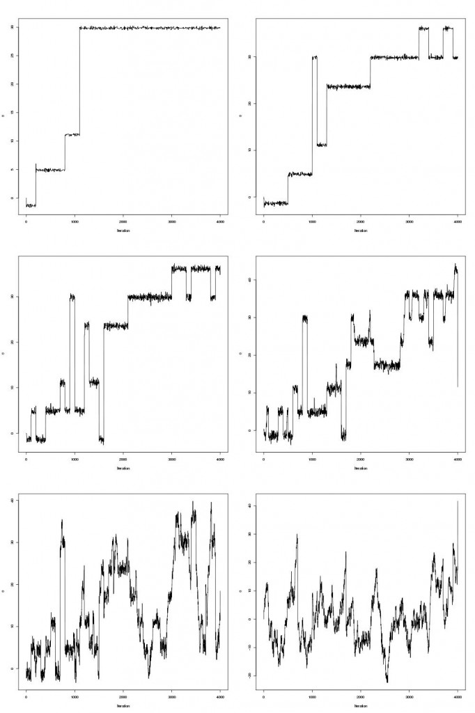
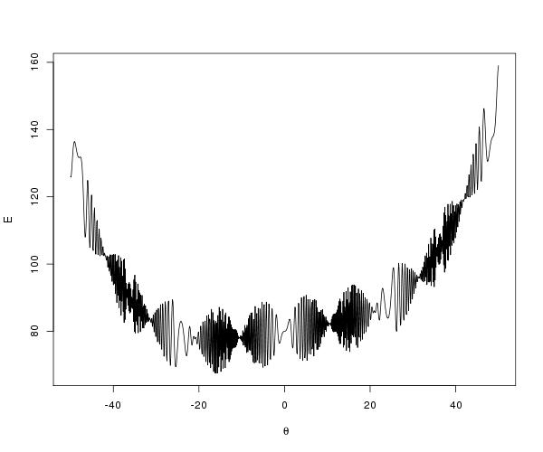
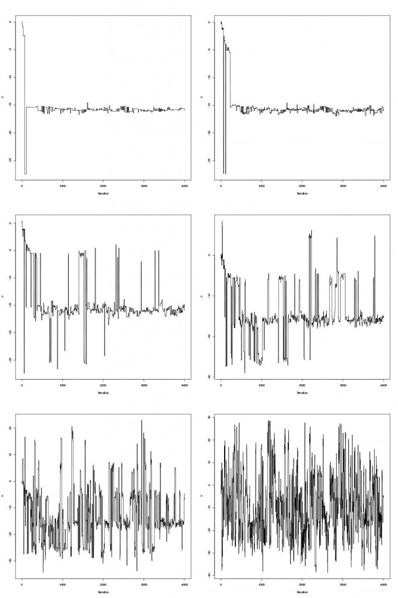

I’ve written a few posts now about using parallel tempering to sample from complicated multi-modal target distributions but there are also other benefits and uses to this algorithm. There is a nice post on Darren Wilkinson’s blog about using tempered posteriors for marginal likelihood calculations. There is also another area where parallel tempering finds application, namely in stochastic optimization. I first encountered parallel tempering whilst doing my MPhys degree at the University of Warwick but at that time it was employed as a stochastic optimization algorithm to find the minimum energy configuration of a Lennard-Jones cluster as opposed to a sampling algorithm. All that is required is one observation to turn this sampling algorithm into a stochastic optimization algorithm. Lets break this observation down into a few steps.
Consider sampling from a simple exponential distribution $$f(E)\propto e^{-\beta E}1_{(0,\infty )}(E),$$
with rate parameter beta. For now lets fix beta=5. One could sample from this distribution using the same Rmpi parallel tempering code given in my previous post by simply changing the target distribution to the exponential above. The histograms of mcmc draws from four tempered distribution would then look something like this:

Note the scale on the x-axis. The two important observations mentioned earlier are
{kind=link}
The second point is important because although the sampling algorithm is creating draws that are not the minimum value of E, by increasing the rate parameter one can force these draws to be arbitrarily close to E-min.
A Uni-modal Optimization Function
How does this relate to optimization? Consider setting $$E(\theta)=(\theta-40)^2$$ Whereas before where using the Metropolis algorithm one would propose a new value of E, say E’, now the proposal is made in θ, and θ’ is accepted based on u < f(E(θ')) / f(E(θ)). By construction the algorithm gives draws close to E-min, which occurs when θ=40. The traceplot of θ is shown below:

Click here for the code.
{kind=link}
A Harder Optimization Function
The above quadratic was an easy uni-modal example. Let’s try a harder function. Consider the minimum of $$ E(\theta)=3sin(\theta)+(0.1\theta-3)^2,$$ which looks like this:

This function has infinitely many local minima but one global minimum around 30. Local minima make optimization challenging and many optimization algorithms get stuck in these regions as locally it appears the minimum has been reached. This is where the parallel tempering really helps. The traceplots of theta are shown for six tempered distributions below:

Click here for the code.
{kind=link}
{kind=link}
I’m currently working on another example just for fun, namely finding the lowest energy configuration of an n-particle Lennard-Jones cluster. This is a nice example because one can visualize the process using vmd and it also provides some insight into the origins of such terminology as “tempering”, “annealing” and “temperature” which always look somewhat out of place in the statistics literature.
An Even Harder Function
Consider the function
$$ E(\theta)=10\sin(0.3\theta)\sin(1.3\theta^2) + 0.00001\theta^4 + 0.2\theta+80, $$
which is shown below.

{kind=link}
The trace-plots for the parallel tempering optimization are shown below

{kind=link}
Examining the mcmc draws the minimum is obtained at theta=-15.81515.
Li Y., Protopopescu V.A., Arnold N., Zhang X. & Gorin A. (2009). Hybrid parallel tempering and simulated annealing method, Applied Mathematics and Computation, 212 (1) 216-228. DOI: 10.1016/j.amc.2009.02.023